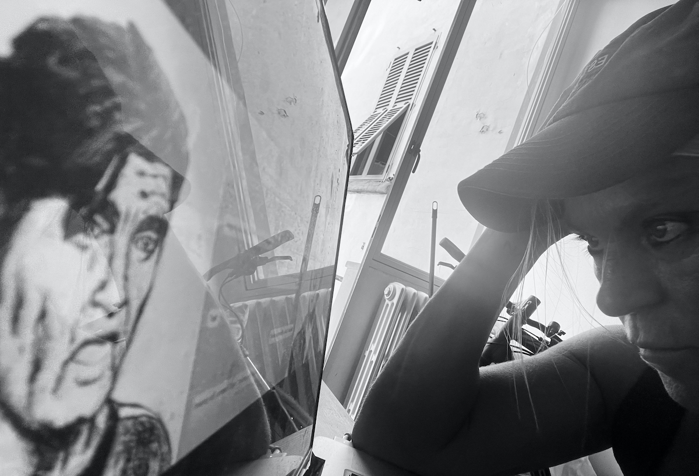

- Diemut Strebe /
- EL TURCO
TURCO
- Diemut Strebe /
- EL TURCO / Living Theater
INTERACTIVE LIVE DIALOGUES
HUMAN vs AI MACHINE
An Artwork by Diemut Strebe
- Diemut Strebe /
- EL TURCO / Living Theater
In collaboration with:
Eli Barzilay, Ben Greenman, Zhiling Huang, Xiangqing Guan.
Northeastern University
University of Utah
- Diemut Strebe /
- EL TURCO / Living Theater / View
El Turco / Living Theater / Still of Live Dialogue
- Diemut Strebe /
- EL TURCO / Concept
EL TURCO
El Turco presents a large-scale (8x3m) interactive video installation in real time. We see two digital AI avatars in animated hand-drawing aesthetics projected at the two sides of a screen. Their spoken dialogue appears as continuously evolving text at the center screen.
One of the avatars, called Socrates, (to the right) is operated directly and live by a human hidden in the system. The setup is similar to the “Mechanical Turk”, an automated chess player that surprised the 18th century aristocrat courts, but later appeared to hide a human player. The left avatar is operated by a GPT4 machine, which is chained to a pipeline of different AI tools. It presents an identity that is constituted as a mix of different fictional and historical personalities. In essence the construct can be seen as a format, a shell, since in principle it could be holding any desired profile and narrative. It seems to evoke allusions to what French philosopher Jean Baudrillard describes as a simulacrum: a system that generates a world of symbols and signs without any original or “grounded” relationship to the world. Despite the machine displaying impressive and surprising capabilities in mimicking knowledge and understanding, the effortless “talking machine” seems to reveal itself, according to some critical observers, as just quite an advanced computational “magician’s trick”, while the discussion about the machine’s true degree of intelligence remains the subject of controversy. (Since we have no understanding of how our own intelligence really works it could well be that Wittgenstein’s quote that “Nothing is hidden.” and “All is open to see”, is true, and that there will be no ghost in the machine to be ever found.)
Other than a “text-only module” the presented interactive live-conversations provide a 360-degree view on the avatar giving much more insight in how the machine and its modules work. Any flaw suspends the illusion of intelligence, every success nourishes it. But if working perfectly, what does it allow for to really state about the machine’s true intelligence and what to say about our own? In any case we seem to be compelled to rethink our definitions and perspectives on human and machine intelligence.
Next to the video series of live-recorded dialogues called El Turco / Conversations with an AI (using a customized chat version of GPT-3) El Turco / Living Theater enables the audience to explore any latest version in Large Language Model technology in a live theater performance played by an actor. The figure of Socrates can be chosen in different gender and race formats. In the theater format an audio gender switch tool can be used. The exchangeability of any racial, gender and personal identity addresses a dramatic problem that AI technology throws at us by disabling the discrimination of true and false in the creation of digital counterfeits and other applications.
Due to the artwork’s interactive live interface, the audience can also be invited to talk with the AI machine directly by operating the right avatar.
- Diemut Strebe /
- EL TURCO / Living Theater / Live#1
- Diemut Strebe /
- EL TURCO / Living Theater / Live#2
- Diemut Strebe /
- EL TURCO / Living Theater / Live#3
- Diemut Strebe /
- EL TURCO / Living Theater / Live#4
- Diemut Strebe /
- EL TURCO / Living Theater / Live#5
- Diemut Strebe /
- EL TURCO / Living Theater
Live conversation of a person from the audience with the AI machine on the left. She is operating and controlling the right avatar's text and movement directly and instantaneously via a microphone. The speaker therefore talks directly through the avatar.
- Diemut Strebe /
- EL TURCO / Technical

El Turco / Living Theater / Face Capture Still
- Diemut Strebe /
- EL TURCO / Technical
- Diemut Strebe /
- EL TURCO / Technical
Technical Description of the Live Dialogue System
The avatar called Socrates, (to the right, presented in different gender and racial formats) is operated directly and live by a human hidden in the system. The actor’s face is captured through a geometrical smart grid and mapped onto the avatar’s face. An attached live data stream application enables the actor to operate the avatar directly and in real time, generating a lifelike mimicry of human expressions on the avatar’s face. The actor’s spoken words then trigger a pre-encoded pipeline of multiple AI components to enable a live conversation: The human voice output is converted simultaneously into text which prompts the second avatar, named von Kempelen. Von Kempelen is creating text through a natural language processing AI system. We use statistical based probabilistic language models called Large Language Models to generate text (such as the GPT series or PaLM 2 and others). The text is simultaneously converted into audio. Through an audio-to-face AI module, von Kempelen’s machine-generated audio output also operates his own lip sync, gestures, facial expressions, and body movements.
- Diemut Strebe /
- EL TURCO / Interchangeable Characters

Model #1
- Diemut Strebe /
- EL TURCO / Interchangeable Characters
Model #2
- Diemut Strebe /
- EL TURCO / Interchangeable Characters
Model #3
- Diemut Strebe /
- EL TURCO / Interchangeable Characters
Model #4
- Diemut Strebe /
- EL TURCO / Interchangeable Characters
Model #5
- Diemut Strebe /
- EL TURCO / Interchangeable Characters
Model #6
- Diemut Strebe /
- EL TURCO / Interchangeable Characters
Model #7
- Diemut Strebe /
- EL TURCO / On AI
Some thoughts on the current state of AI Large Language Models and AI technology in general
Although the current AI Large Language Models generate representations of semantic dimensions, at this point within the accelerating development of AI technology the machines seem to hold no conceptual understanding of language nor the world. Nevertheless, renowned AI specialists are claiming Large Language Models as GPT-4 can perform simple reasoning. Predicting the next word still seems far removed from consistent realistic or hypothetical modeling, critical and strategic thinking or drawing logical and causal inferences for example, which allows us to extract meaning in so many intricate ways instead of being exposed to showers of noise. Nevertheless, the increasing level of coherence in Large Language Models can present a forceful challenge for our ability to even discriminate between true and false, not even considering additional social disruption and change that comes with the technology.
In addition: who codes into the machine what is true and false on subjects that involve value statements and a specific world view? All this could implicate unpredictable manipulative powers. And when considering who encodes goals and motivations into machines, for example into lethal AI weapons, we could start to doubt whom we must fear more — AI machines or ourselves?
Would additional new technology and the chaining of AI modules elevate AI results to a whole new scenario of the much-discussed “singularity”? Could AI involve the end of the lead of human intelligence by its manipulative omnipresence even if artificial general intelligence will be just a fiction? Or will it be the most potent extension of man’s technological grip on the world, that can tackle the biggest problems through a vast array of application across many fields in the most promising way as AI advocates like to convey? In any case AI strongly confronts us with its impactful powers in practical applications and the challenge it presents to rethink intelligence.
- Diemut Strebe /
- EL TURCO / Conversations with an AI
EL TURCO / Conversations with an AI
by
Diemut Strebe
- Diemut Strebe /
- EL TURCO / Conversations with an AI
In collaboration with:
AI Specialist Steve DiPaola:
AI drawing & languages systems
Gaines Semler: voice-acting Socrates
With many thanks to Gary Marcus for AI consulting and to the Aichi Triennale for their support.
- Diemut Strebe /
- EL TURCO
Conversations with an AI
Conversations with an AI are 17 live recorded dialogues of the artist with an AI text generating machine in the summer of 2022 (a customized GPT3 chat version). They are inspired by Plato’s Theaetetus, experimental concepts, and reflections on the human conditions.
The artwork was presented in the Aichi Triennale, Japan in 2022.
- Diemut Strebe /
- EL TURCO / Conversations with an AI
Installation View at Aichi Triennale 2022.
- Diemut Strebe /
- EL TURCO / Conversations with an AI

Installation View at Aichi Triennale 2022.
- Diemut Strebe /
- EL TURCO / Conversations with an AI
Collection of 9 dialogues of 17
- Diemut Strebe /
- EL TURCO
Artist
I am a German-American, US-Based artist, working with different international institutions, but mostly with MIT faculty. At MIT I have been Artist in Residence from 2017-2019.
My works link art and science to address contemporary issues, often incorporating themes related to philosophy and literature. I explore the crossover between science and art through media such as living biological materials, nanomaterials, algorithms & numbers, experimental setups and installations. This practice includes scientific concepts, methods and tools, engaging with science directly. The collaborations with scientists take place for example in the fields of human and plant-genetics, quantum- and astrophysics, AI, math and various types of engineering. The heterogeneous appearance of my works, results from the variety of topics and strands in science I deal with.
Focused on the advanced science of our era, I feel compelled to re-affirm the Romantic paradigm of “the new” as well as the role of avant-garde art relating to radical experiments of Classical Modern Art throughout the medium and its combination with the arts.
- Diemut Strebe /
- EL TURCO
Collaborators
- Eli Barzilay, PhD
- Hacker, Teacher, Programmer; Northeastern University; website.
- Ben Greenman,
- University of Utah website.
- Zhiling Huang
- Northeastern University; website.
- Xiangqing Guan
- Digital kitsch maker; Northeastern University; website.
With many thanks for the kind support to:
- Jianchi Zhou
- Northeastern University; website.
- Hongyin Luo
- Massachusetts Institute of Technology.
- Varun Shankar
- University of Utah; website.
El Turco #1 / Conversations with an AI (recorded version)
- Steve DiPaola, PhD, Prof
- School of Interactive Arts & Technology (SIAT); Past Director: Cognitive Science Program at Simon Fraser University; research site; artwork site.
- Gaines Semler
- is a Brooklyn-based actor, writer, and filmmaker. He graduated with a BFA in performing arts from the Savannah College of Art and Design. His specialities include voice acting, classical theatre, and sketch comedy.
With many thanks to Gary Marcus.
- Diemut Strebe /
- EL TURCO